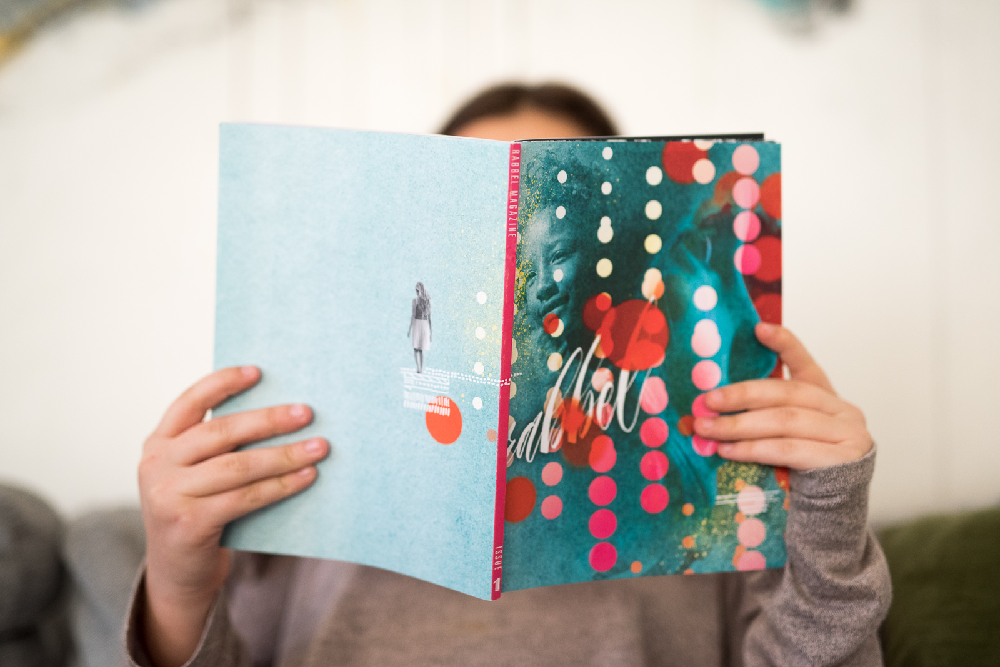

Bowerbirds - The Boweress
Story telling at its finest
10 July, 2017
I think it is now even more important for women to be finding and showing their voice in a positive productive manner. We don’t want to smash the glass ceiling, we want to build our own house and this all starts with empowering girls to grow into the women they want to be. What was the catalyst for you in starting Rabbel?
Absolutely. The idea initially came about when I was brainstorming with a friend about an idea she had to start an online resource for teenage girls in Germany. After that conversation I started to think about where I used to get information when I was a teenager, and I got nostalgic thinking about Sassy Magazine, which was a feminist teen magazine in the early 90s. I got a burst of inspiration to start a feminist teen print magazine but quickly realized I know absolutely nothing about what it means to be a teenager today. But as the mother to a then 9 year old, I did know a bit about modern girlhood. I started to think about what a feminist magazine for girls might be like. Around the same time I came across a Ted talk (https://www.ted.com/talks/reshma_saujani_teach_girls_bravery_not_perfection) about how girls approach coding differently than boys. The speaker connected it back to how we start treating boys and girls differently early in childhood, that boys are encouraged to take risks while girls are encouraged to be more careful, and that’s what solidified the concept for me. The narrative for girls has to be changed as young as possible, with bravery and risk-taking encouraged and modelled for them, rather than perfectionism.
How did you get the quarterly magazine off the ground?
My background is in photography, graphic design, and writing, so I knew creating the actual magazine would come naturally for me. The hard part was learning an entirely new industry. I spent the better part of a year researching independent publishing and distribution. I talked about the idea with everyone I crossed paths with and I think my passion for it really mobilized support so I had a lot of people contributing to the process. Early on I shared the idea with someone who told me to send her the business plan when it was ready and she would invest in it, so the funding for it fell into my lap. But I had to put everything else on hold to make it happen.
Take us through Rabbel’s values and what they mean to you personally and how these form a basis for discussion in the magazine
As soon as I got the idea to create a magazine for girls, the ideas for how to approach it really started to flow. I had been in a long creative rut, and it was like the floodgates had opened and it became clear pretty quickly I needed a way to tie everything together into a cohesive vision, so I came up with a list of values that would guide all the choices I needed to make in what to pursue and how to deliver it. These values are creativity, inclusivity, courageousness, self-respect, openness, and connection. While there are incredible and inspiring women in every field, I chose to focus primarily on women in the arts because that’s my primary area of knowledge and interest, and I think fear of making mistakes can lead girls astray from their creativity so I really wanted to push that. The other values speak mostly to the idea of community and love, accepting ourselves as we are and feeling free to be our authentic selves in the world, and connecting with others, regardless of our differences. Aside from just delivering frank, engaging content, I ultimately want Rabbel to feel like a community, a place where all girls can feel a sense of belonging and acceptance without any pressure to conform or fit in. So Rabbel’s values are a celebration of both our individuality, and our shared humanity.
How do you go about choosing your artists to contribute to the magazine?
Finding inspiring women to feature is pretty easy, as there are so many! For the first issue I relied mainly on my network of friends and acquaintances and then I figured once I had something tangible to show people, I could get the interest of people who didn’t already know me to participate in future issues. Every time I come across an interesting female-centric story I add her to the list. I try to focus on stories of women who are really forging their own paths, to highlight the principles of risk-taking and courageousness, and I choose stories or styles that would be interesting to a younger audience. So far almost all of them support Rabbel’s mission and are excited to contribute.
Who are some inspiring females for you right now?
On a day to day basis I am so inspired by my friends, many of who are also out there creating businesses and non-profits and making amazing contributions to the world with their vision and work. On a global scale there are far too many to list, but I am most inspired by creative women who can’t be categorized or boxed in, women who express themselves prolifically across multiple mediums for example.
You work closely with your daughter on this publication, how does she inspire you and what is something notable you have learnt from her?
I am so inspired by my daughter Tully’s openness and bravery. When I was her age I was painfully shy and it held me back from so many opportunities I wish I had been courageous enough to pursue. She just kind of goes fearlessly out into the world and makes stuff happen, and she’s only 11. One thing I have learned from her, and that has had a major influence on Rabbel as well, is that kids are far more sophisticated than we give them credit for. I noticed a lot of the magazines that already existed for kids were woefully dumbed down and so it was important for me not to talk down to our audience. Rabbel’s content is sophisticated and a bit edgy, because it can be. Stories don’t have to be illustrated with cartoons for kids to connect to them.
What does community mean to you?
I spent much of my life moving around the world in search of my community, which to me is a sense of acceptance and belonging. At some point I discovered that rather than just being able to plug myself into some existing community, I would have to create my own. Now I am really deliberate in who I surround myself with, and luckily I am surrounded by people who inspire, support, and accept each other exactly as we are, even if we aren’t all physically in the same place.
You have travelled the world extensively, how have your travels inspired your pursuits in relation to Rabbel?
I am fascinated by how people’s stories are shaped by their particular struggles, obstacles, and limitations, which of course are different all over the world, and the ways in which they are inspired to create their own paths in life. There are some limitations that might seem incomprehensible to those of us in the west. For example, one of the stories in an upcoming issue of Rabbel is about a group of girls in Kabul who were forbidden to ride bikes, so they took up skateboarding instead.
The Boweress is about women finding their space figuratively and literally, where is your bowery/ go to place/ space and what are some of the things you need in order for it to be a room of one’s own so to say?
For the last 20 years I have moved all over the world, from several US cities, to Indonesia, to Costa Rica, and now Berlin, perhaps in pursuit of some ideal place to suit me best. I guess I’ve come to terms with the fact this mystical place or community doesn’t exist, that instead I am perhaps most galvanized by the freedom to change. I have felt equally at home in the tropical jungle as I now do in the middle of a European metropolis. I have a hard time imagining myself settling down in one place forever, which is probably why it’s important for me to have a location independent business, yet I am still a huge homebody. I work from home, and so wherever I live, I put a lot of energy into creating a space I want to be in. The most important things for me are good light and relative quiet. And of course access to interesting people when I need connection or feedback.
Is social media empowering for women or something that needs to be discussed further in order to simultaneously promote and protect women?
I have a complicated relationship with the word “empower” because it suggests women need some external source to grant them power. We shouldn’t be looking for permission or protection. Women and girls are already powerful, we just need to be seen as we are and perhaps girls need to be reminded they are already everything they need to be. Unfortunately I don’t think social media offers very many of these reminders since it tends to focus on a polished and perfected version of reality. I find it disheartening that when you search hashtags related to female empowerment, by far the most popular type of content to come up is fitness inspiration, as if empowerment comes from looking or physically feeling a certain way. Personally I feel true female power comes from our capacity to make creative and innovative contributions to the world, and so those are the stories I want to expose young girls to. I hope social media will evolve to be more authentic, but at the same time, I guess that’s not really its purpose.
It’s an exciting time to be a woman today, what are some of the challenges we are still facing and some things that you see as useful for overcoming these?
Personally it took me into my 30s to unravel a lot of the sexist messaging I grew up with, like the idea that my value as a woman was intrinsically tied to my appearance. Things are changing, but this type of messaging is still deeply embedded in society and my hope for future generations is that they don’t have to invest the same amount of time and energy in unlearning this stuff. That’s why changing the narrative that girls are exposed to from a young age is so important to me. Talk about appearance will never be a part of Rabbel’s content, not even to explicitly state that it’s irrelevant, because that still suggests there are contexts in which it could be. Instead our messaging focuses on valuing the stories of girls and women based on what they can do and be. I think if you have to say, don’t listen to the message that what you look like matters, you’re still drawing attention to the wrong thing. Instead we should be drawing girls’ attention to their inherent power, creativity, and courageousness, as well as their right to acceptance and connection for exactly who they are.
Check out Rabbels’ first issue over here
